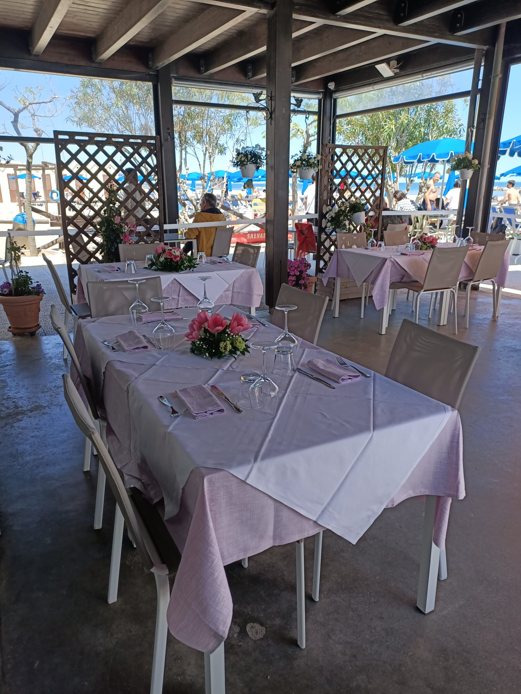
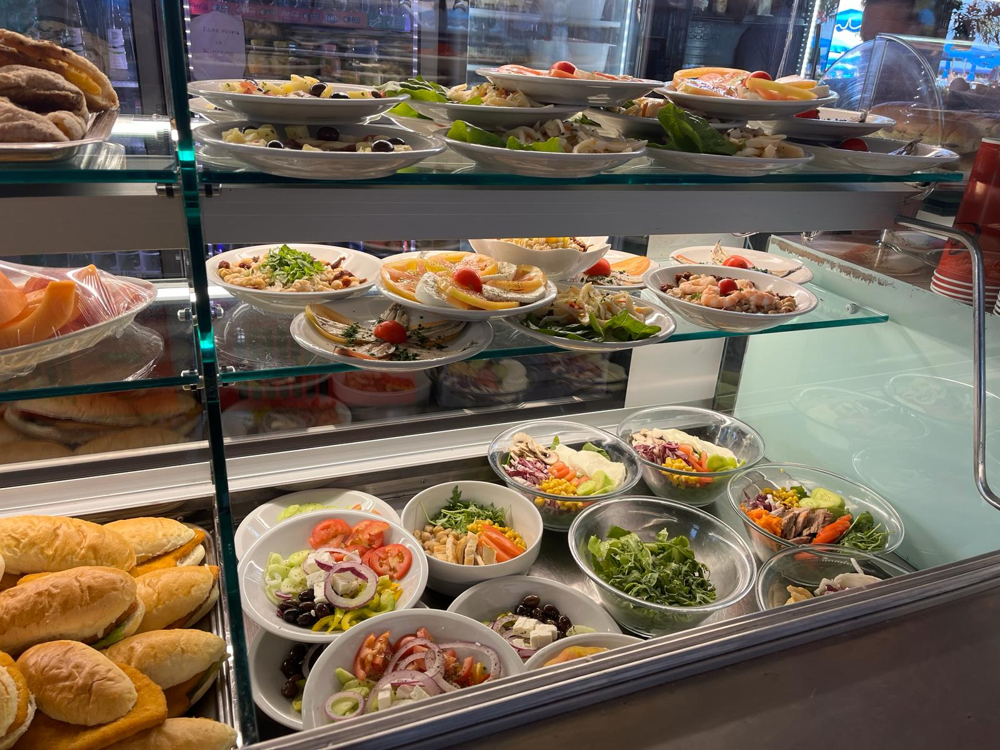
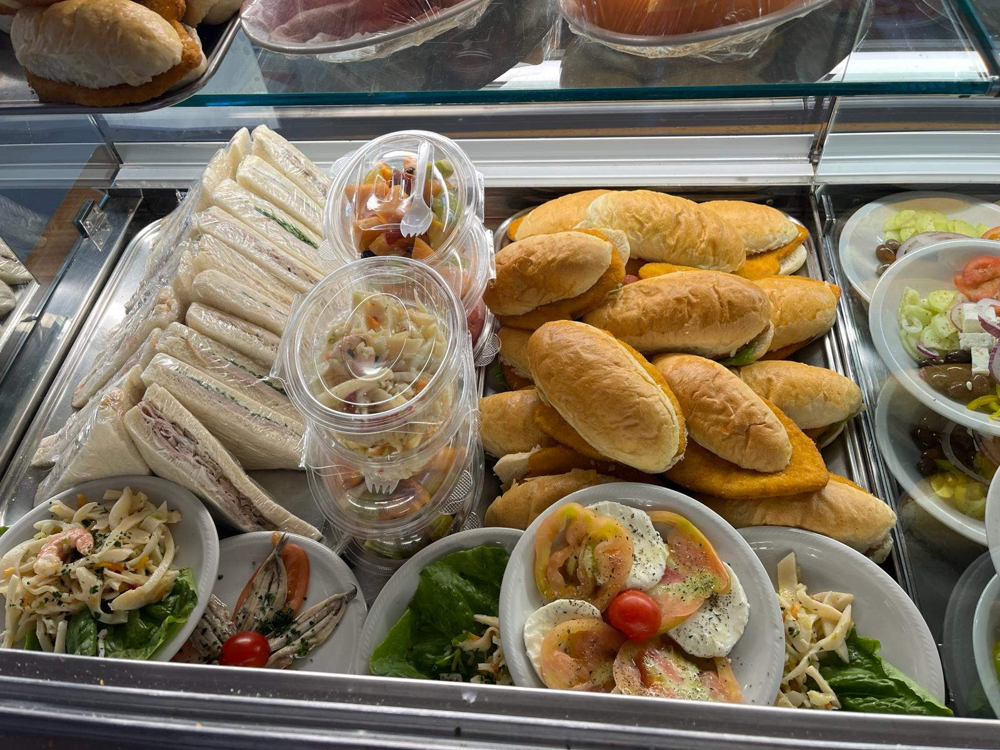
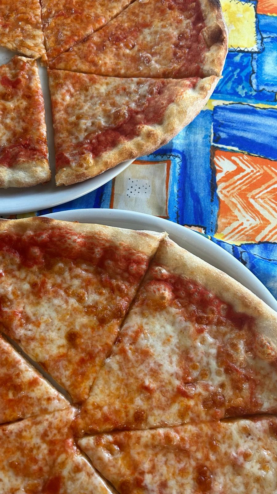
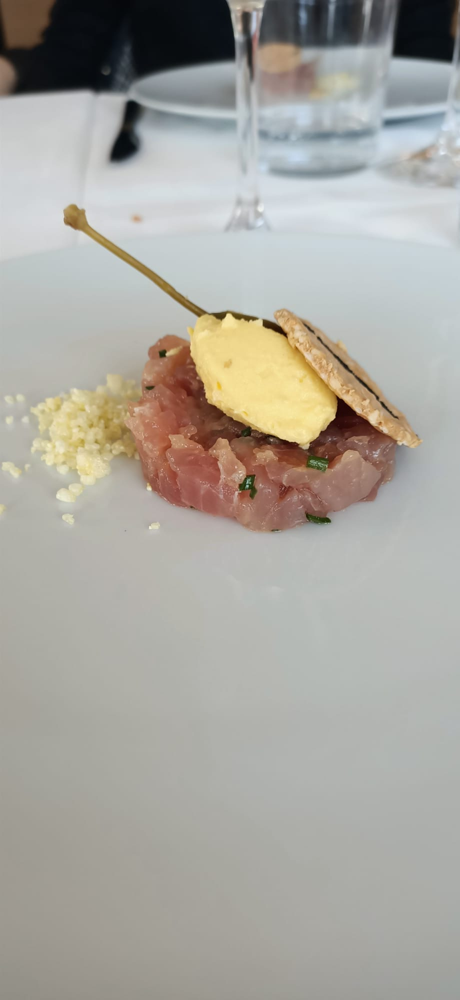

- Antipasto
- di pesce freddo
- Antipasto attilio
- di pesce caldo e freddo
- Alici marinate
- Alici farcite
- con scarola su salsa
- di prezzemolo e acciughe
- Soutè
- di cozze e vongole
- Tempura
- di gamberoni al cacao
- su vellutata di verdure
- Crostini misti